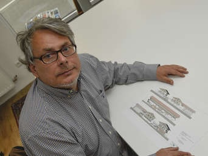
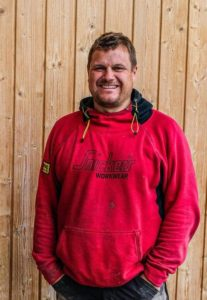

Fußball
Trainer und Teamhelfer dringend gesucht
Wir freuen uns sehr über den enormen Zulauf, vor allem in unseren Kleinfeld-Altersklassen bis 10 Jahren. Für unsere ehrenamtlichen Trainer bedeutet das aber auch immer noch mehr Arbeit. Aus diesem Grund suchen wir händeringend Mamas und Papas, ältere Geschwister oder einfach nur Fußballverrückte, die unsere Trainer bei der Organisation der Teams, Trainings und Spielen unterstützen. Bitte geht auf unsere Trainer zu, wenn ihr Ihnen helfen könnt!
Trainingszeiten
Sportanlage der SF Gmund-Dürnbach
Tölzerstr. 102, 83703 Gmund/Finsterwald
Die Teams der SG Tegernseer Tal trainieren und spielen ab Mitte Oktober auf dem Kunstrasenplatz in Bad Wiessee, Hagngasse 49a
Mannschaften
| Mannschaft | Trainingszeiten | Details |
|---|---|---|
| BAMBINI – ab 4 Jahren | Sa. 10:00 – 11:00 | Details |
| F-Jugend – 2014er und 2013 | Mo. und Mi. 17:30 – 19:00 | Details |
| E-Jugend – 2012er und 2011er E1 | Mo. und Mi. 17:15 – 18:45 | Details |
| E-Jugend – 2012er und 2011er E2 | Mo. und Mi. 17:15 – 18:45 | Details |
| D-Jugend – 2010er und 2009er - SG Tegernseer Tal 1 | Di. und Do. 18:00 – 19:30 | Details |
| D-Jugend – 2010er und 2009er - SG Tegernseer Tal 2 | Di. und Do. 18:00 – 19:30 | Details |
| D-Jugend – 2010er und 2009er - SG Tegernseer Tal 3 | Di. und Do. 18:00 – 19:30 | Details |
| C-Jugend – 2008er und 2007er - SG Tegernseer Tal 1 | Di. und Do. 17:30 – 19:00 | Details |
| C-Jugend – 2008er und 2007er - SG Tegernseer Tal 2 | Di. und Do. 17:30 – 19:00 | Details |
| B-Jugend – 2006er und 2005er - SG Tegernseer Tal 1 | Di. und Do. 17:30 – 19:00 | Details |
| Herren | Di. und Fr. 19:00 – 21:00 | Details |
Spartenleiter

Christian Werth
Tel: 0160–90 93 11 84
2. Spartenleiter

Thomas Lix
Tel: 0160–28 36 871
Jugendleiter
Maximilian Hahn
Tel: 0151-404 446 93